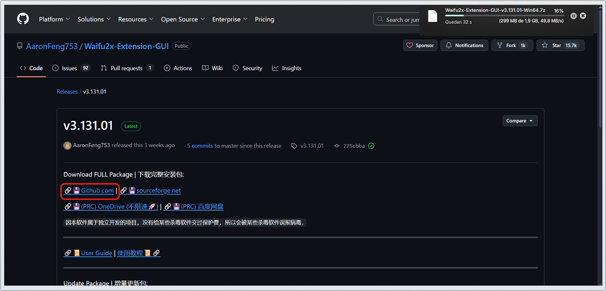
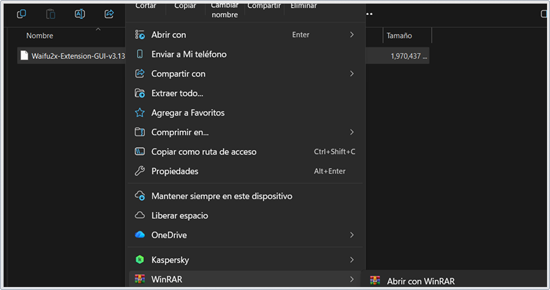
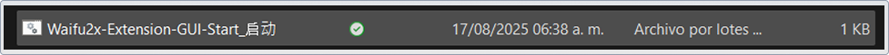
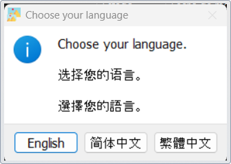
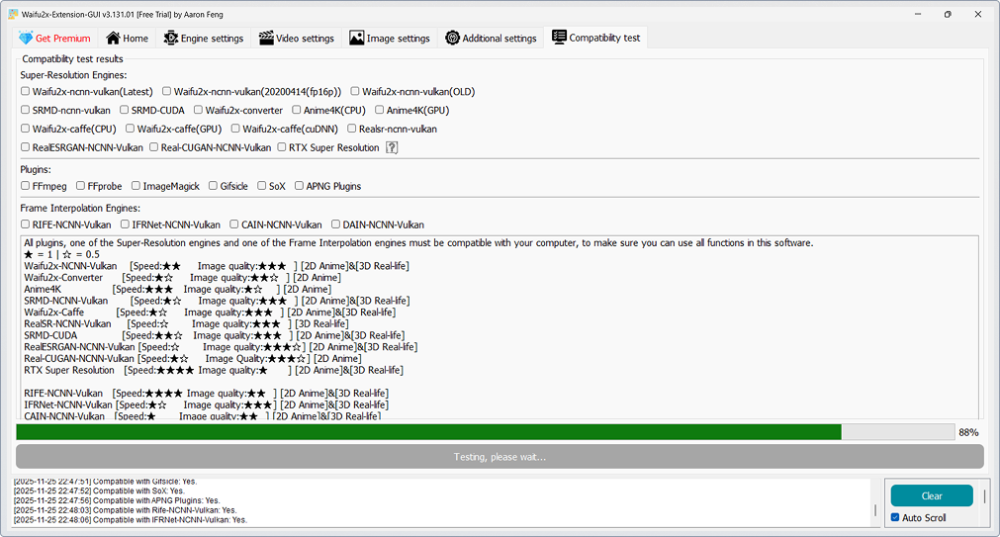

Lo primero es descargar la versión más reciente estable de Waifu2x-Extension-GUI (solo compatible con Windows) desde el repositorio de GitHub.
Seleccione 'Github.com'; al hacer clic, se iniciará la descarga del archivo.
Localiza el archivo descargado (formato ZIP o RAR) y haz clic derecho sobre él. Selecciona la opción 'Extraer aquí'.
Dentro de la carpeta extraída, selecciona el archivo instalador y haz clic para iniciar el proceso.
Selecciona tu idioma preferido en la ventana de configuración.
A continuación, asegúrate de permitir que el software realice las pruebas de compatibilidad necesarias con tu equipo, incluyendo componentes clave como la tarjeta gráfica.
